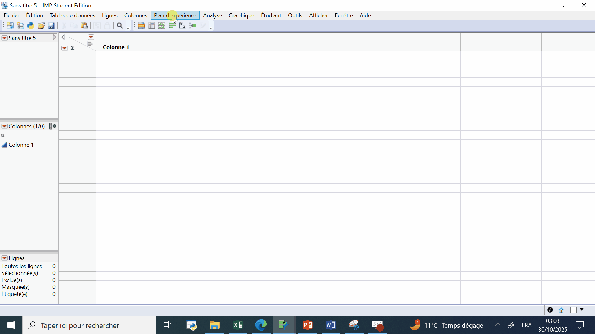

Procédure 24 · Estimation
Marge d’erreur pour une proportion
Procédure pas à pas
- Ouvrir Plan d’expérience → Explorateurs de taille de l’échantillon → Intervalle de confiance → Marge d’erreur pour une proportion d’un échantillon.
- Choisir un intervalle bilatéral.
- Saisir le niveau de confiance, par exemple 0,95.
- Saisir la taille de l’échantillon et la proportion observée.
- Enregistrer les paramètres puis relever la marge d’erreur.
- Pour un intervalle symétrique approprié, calculer proportion ± marge d’erreur.
Jeu de données / résultat
Aucun jeu de données requis dans l’exemple
Point de vigilance : Les bornes ne sont pas toujours exactement symétriques selon la méthode d’intervalle utilisée.
Démonstrations animées dans JMP
Animations extraites du PowerPoint « Lean Six Sigma avec JMP 003 ». Elles complètent les étapes numérotées ci-dessus.

Commentaires de l’enseignant
Aucun commentaire publié pour cette fiche.
Rédiger ou modifier un commentaire
Les modifications saisies ici sont conservées dans ce navigateur uniquement. Pour les rendre visibles aux étudiants, télécharge la fiche HTML modifiée puis remplace le fichier correspondant dans le dossier
jmp/de GitHub.